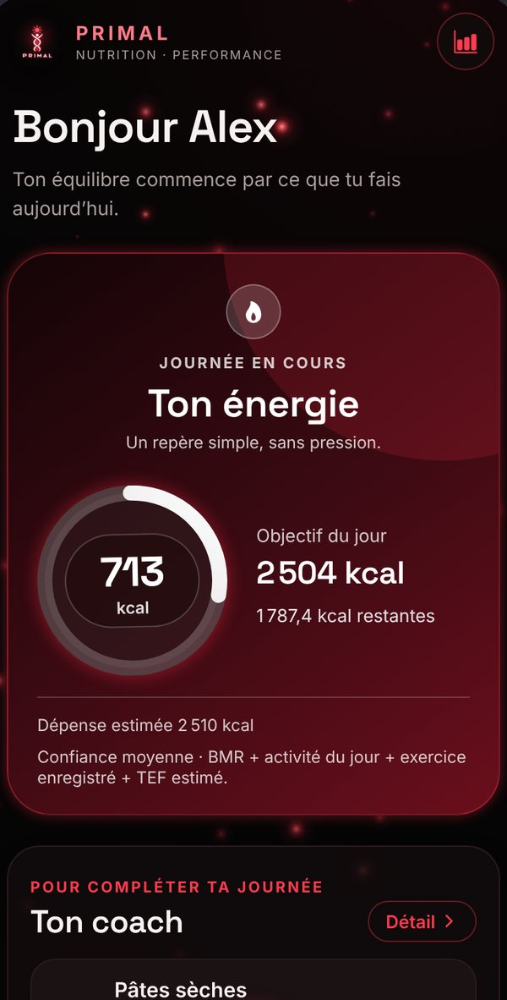

Nutrition · Santé · Performance
Décodeta santé
Ce que tu manges, bois, dors et bouges, réunis dans une note sur 100.
I
Ton énergie du jour
Calories, objectif et coach personnalisé. L'objectif s'ajuste à ta dépense réelle quand tu notes ton poids.
II
Plus de 3 000 aliments
La table officielle Ciqual de l'ANSES, plus le scan de code-barres avec Open Food Facts.
III
Tous tes micronutriments
Vitamines, minéraux, fibres et oméga-3, suivis gratuitement, sans abonnement.
IV
Ta note sur 100
Sept piliers réunis en un seul chiffre, pour voir ta journée d'un coup d'œil.
V
Partage ta journée
Une carte stylée à envoyer, sans jamais montrer tes repas ni ton poids.
Glisse pour tourner